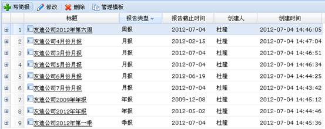

项目简报模块主要实现了年报、月报等各类型项目报告的管理功能。
项目简报管理界面如下图所示。

图 项目简报
4.2.10.1 简报管理
项目简报的管理包括写简报，修改和删除简报的功能。
1、写简报
点击工具栏“写简报”按钮添加简报，简报分为年报、季报、月报、周报、即时报告5种类型。用户编辑简报内容前可以选择一个合适的模板，简报模板由用户自己创建。
2、修改简报
在项目简报列表中选择一个简报，点击工具栏中“修改”按钮可以修改简报。
3、删除简报
在项目简报列表中选择一个简报，点击工具栏中“删除”按钮可以删除简报。
4.2.10.2 管理模板
写简报时，用户可以选择一个合适的模板，使用模板会很大程度方便用户编辑简报。
1、添加、修改、删除模板
点击工具栏上的“添加”、“修改”、“删除”按钮可以添加、修改和删除模板。
2、导出和导入模板
用户可以将模板从一个项目导出，并导入到多个其他的项目。点击工具栏上“导出”和“导入”按钮，可以导出和导入模板。
3、设置默认模板
在模板操作列点击“设为默认”可以将该模板设置为默认模板。再次点击取消该设置。